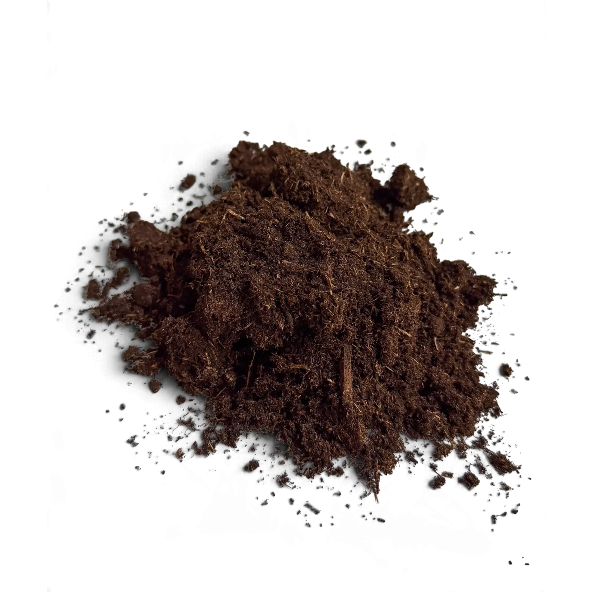

Kijk naar het gebruiksdoel op de verpakking
Een fabrikant kan aanplantgrond speciaal voor vollegrondstoepassingen aanbieden en een potgrond voor kamer-, kuip- of tuinplanten. Dat zijn concrete productkeuzes, geen bewijs dat alle grond met dezelfde naam identiek is. Sommige potgronden mogen bijvoorbeeld ook in borders worden gebruikt.
| Jouw klus | Wat controleer je? |
|---|---|
| Planten in de volle grond | Of het mengsel past bij de plant en bestaande grond, en hoe je het verwerkt |
| Een pot of bak vullen | Of potgebruik expliciet wordt genoemd en het mengsel bij de plant past |
| Bestaande planten voeden | Of voeding nodig is; extra grond is niet hetzelfde als gericht bemesten |
Wat weten we van Vitalmix?
Vitalmix aanplantgrond wordt aangeboden in zakken van 50 liter. De aangeleverde samenstelling bevat onder andere veen, Horticompost, Hortivezel, tuinturf, Biovin, bemesting 4-7-7 en aanplantmest. Het is daarmee geen turfvrij product.
Deze ingrediëntenlijst vertelt nog niet welke mengverhouding voor jouw project geschikt is. Geef bij een aanvraag daarom door welke planten je gaat zetten, waar ze komen en welke grond er al ligt. Voor potgebruik is een gerichte geschiktheidscontrole nodig.
Moet er direct extra aanplantmest bij?
Niet automatisch. Een grondmengsel kan al voeding bevatten. De losse Dungking Aanplantmest is een ander product met een eigen dosering. In het advies over mest bij nieuwe aanplant lees je hoe je die keuze van de grondvraag onderscheidt.
Kies eerst het product, bereken dan het volume
Meet de benodigde ruimte en houd rekening met de kluit en hergebruikte grond. Met de uitleg over liters aanplantgrond en zakken berekenen kun je de hoeveelheid uitwerken zodra de verwerking is bepaald. Een volumeberekening levert geen mengadvies op.
Gaat je twijfel over het ophogen van een border? Lees dan de afzonderlijke vergelijking tussen aanplantgrond en tuinaarde. Zo kies je vanuit de klus en niet alleen vanuit de naam op een zak.
Veelgestelde vragen
Veelgestelde vragen
Kan Vitalmix zonder meer in elke plantenpot?
Die geschiktheid is niet bevestigd in de aangeleverde productinformatie. Geef plantsoort en toepassing door en bespreek eerst welk grondmengsel past.
Is potgrond uitsluitend voor binnenplanten?
Nee. Er zijn producten voor binnen- en buitenplanten. Controleer het gebruiksdoel en de geschikte planten op de verpakking van het gekozen product.